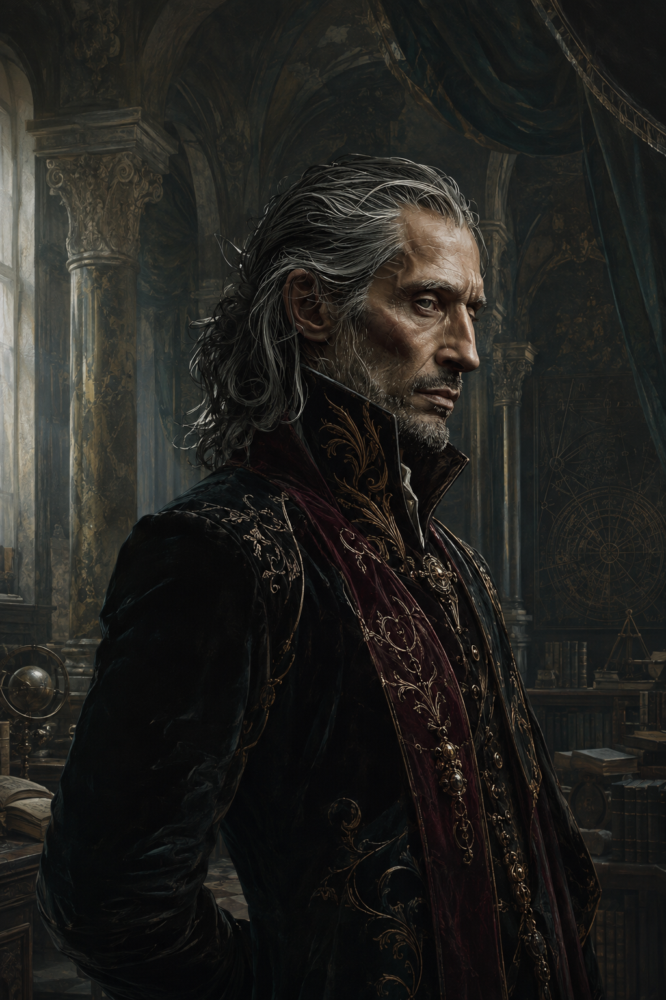

Une académie à Vertelarme
Atamore fonde une école de magie sur un domaine aux fondations plus anciennes qu’il n’y paraît.
Entrer dans l’Académie →Carnets d’Atameoric · Harmonde, 1450
Chroniques d’un obscurantiste, souvenirs d’une compagnie d’Inspirés et fragments d’un monde où chaque beauté dissimule une ombre.

ATAMORE
Prologue — L’Harmonde
Les Muses offrent l’Inspiration. Le Masque la corrompt. Entre les deux, des êtres portent une Flamme assez vive pour infléchir le Drame.
I — Fragments choisis
Atamore fonde une école de magie sur un domaine aux fondations plus anciennes qu’il n’y paraît.
Entrer dans l’Académie →Un double surgit, et avec lui le doute. La charge de Principal passe alors entre d’autres mains.
Lire le fragment →Un tableau maudit, des vestiges sous l’Académie et une énigme qui refuse encore de se taire.
Suivre les traces →II — Le cercle d’Atamore
Compagnons, maîtres, élèves et alliés : les visages qui composent son Harmonde proche.
Principal · Obscurantiste · Inspiré
Le Baron — compagnon disparu
Le maître des secrets
Le daisho doté d’une âme
Le farfadet de l’Échiquier
Le bras droit — maître du Supplice
Le nouveau venu — Supplice Ardent
L’élève minotaure — évadé des Abysses
L’élève prodige — Trait Noir
La Dame de Sombrevent — Jorniste
L’artiste inspirée — Fée Noire
À la frontière de Kesh et des Républiques Mercenaires, une terre que l’on dit bénie des Muses — et que l’ombre n’épargne pas.
Explorer la baronnie →